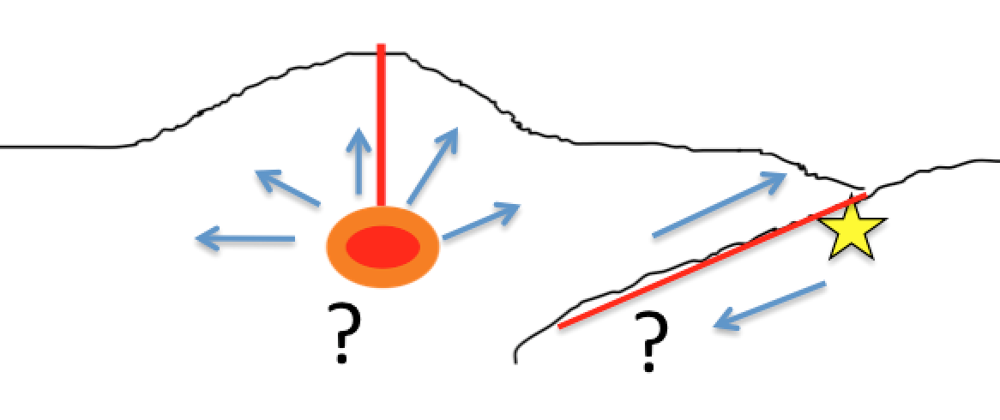

Welcome to beat’s documentation!¶
Author: Hannes Vasyura-Bathke
Introduction¶
In crustal deformation studies geophysicists are interested in estimating the parameters of sources that might be the cause of deformation in the Earth’s crust. These may be for example, movement of fluids (e.g. magma) below a volcano or the fast movements of one tectonic plate compared to another, also known as earthquakes. These types of sources can be often approximated by one or many rectangular dislocations (geometry, position, amount of dislocation). With observations at the earth’s surface like geodetic data, i.e. deformation maps from e.g. InSAR or point information from GNSS and seismic data i.e. seismic waveforms from seismic stations, it is possible to estimate the parameters of these deformation sources.

BEAT is a package that can handle either geodetic and/or seismic data to estimate source parameters of dislocations in the Earth’s crust.
Contents:
- Short Installation instructions
- Anaconda Installation instructions
- Detailed Installation instructions
- Updating beat
- Getting started with BEAT
- Examples
- Frequently asked questions
- API Reference